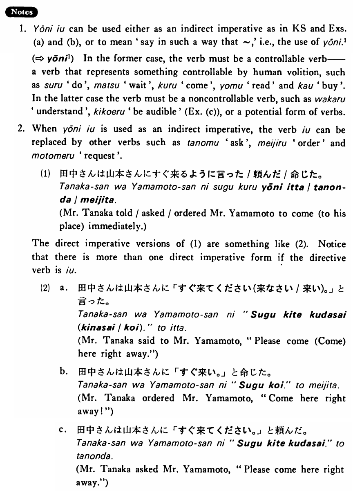

ように言う (B. 556)
- (ks).
- 先生は学生に宿題をするように言った・言いました。
- The teacher told his students to do homework.
- (a).
- 坂本さんは雪江に図書館の前で待っているように言いった。
- Mr. Sakamoto told Yukie to be waiting in front of the library.
- (b).
- すみませんが、小林さんに明日朝九時にここへ来るように言って下くださいませんか。
- I'm sorry, but could you please tell Mr. Kobayashi to come here at 9 o'clock tomorrow morning?
- (c).
- 私は聞こえるようにはっきり言ったんですが…
- I said it in such a way that it was clearly audible, but...
